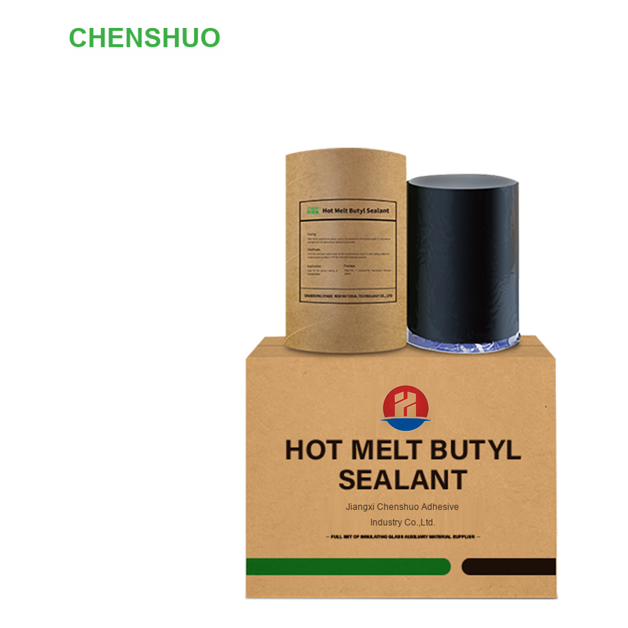
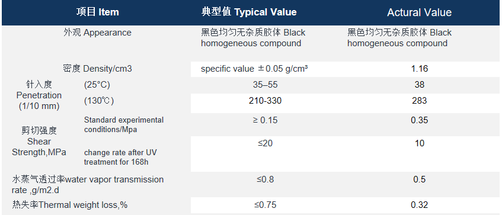

One-component 100% solid polyisobutylene sealant for IGU primary sealing.

Chenshuo hot melt butyl sealant is a one-component, 100% solid, polyisobutylene rubber-based solid elastic sealant. It contains no solvents and won't fog or vulcanize. And it maintains permanent plasticity and is suitable for sealing insulating glass. It does not crack on the surface nor change in hardness. It exhibits good adhesion to materials such as glass, aluminum alloy, galvanized steel, stainless steel, and so on.
Chenshuo hot melt butyl sealant meets all requirements of JC/T 914-2014 (2017) technical standard for insulating glass butyl hot melt sealant.
After evenly applying the sealant, there is no need to wait for the butyl sealant to cure. Just wait for its temperature to drop before bonding to the glass.
28kg/CTN; 4 columns/CTN; 7kg/column; Diameter 180mm
It is non-hazardous and suitable for various transportation methods. Please store it in a cool and dry place below 27°C. The shelf life is 12 months. It is recommended to use it within 6 months after purchase.
